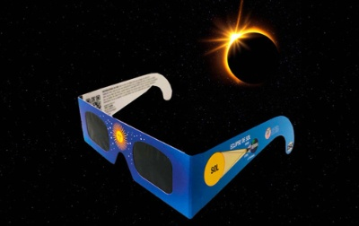
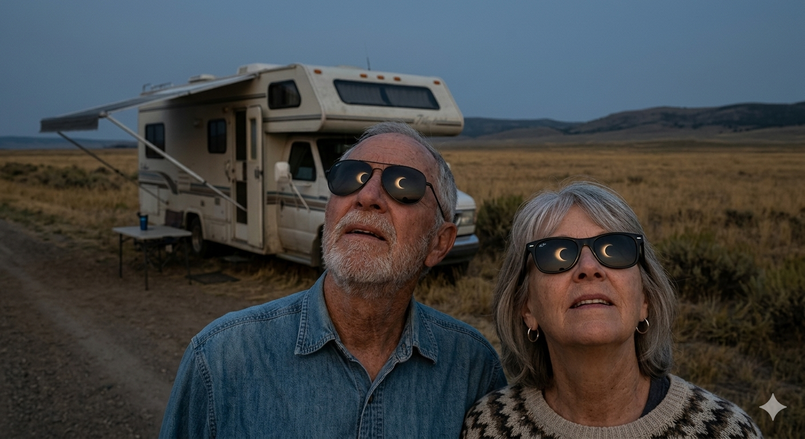
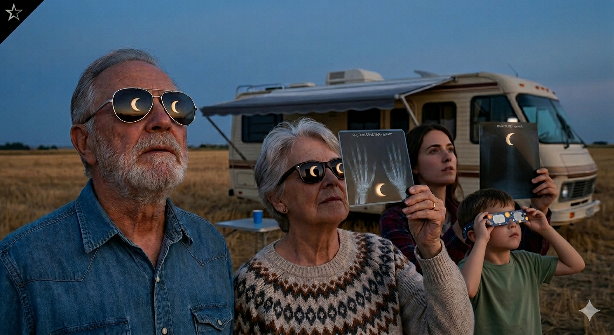
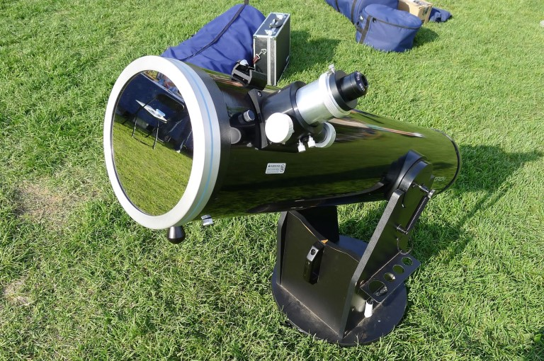
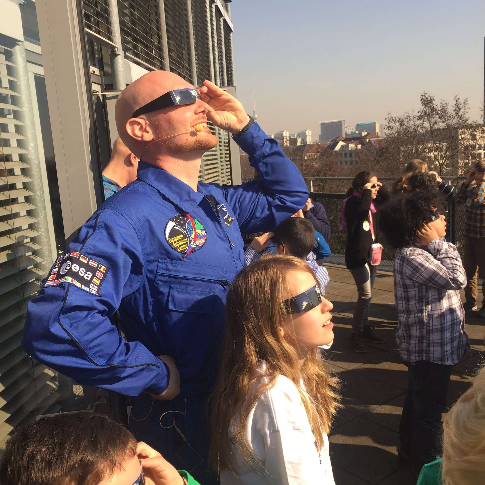

Recomendaciones básicas que no debemos olvidar
Es muy importante que todos y todas sepamos lo importante que es observar el Sol con seguridad durante un eclipse. Un eclipse solar total, anular o parcial, es un fenómeno espectacular que debe contemplarse y disfrutarse con seguridad.
Durante un eclipse, la emoción del momento puede hacernos olvidar muchas cosas, pero hay algo que jamás debemos pasar por alto: mirar al Sol directamente y sin la protección adecuada puede provocar lesiones oculares graves e irreversibles. Esto se debe a que la radiación solar incluye no solo la luz visible, sino también la invisible (radiación ultravioleta e infrarroja), que es igual de dañina aunque no podamos verla.
Proteger la piel del Sol en la playa, la piscina o el campo es algo que ya tenemos interiorizado. Pero ¿qué pasa con los ojos? Son mucho más sensibles que la piel, y los daños por mirar al Sol sin protección pueden ser irreversibles, llegando a causar ceguera. Para evitar que esto ocurra, sigue estos sencillos y prácticos consejos para proteger tus ojos:
- Prohibido mirar directamente: Nunca mires al Sol a ojo descubierto ni utilices filtros caseros (radiografías, cristales ahumados, CD, negativos fotográficos, etc.). Las gafas de sol convencionales, por muy oscuras que sean, tampoco sirven: no reducen el brillo suficiente ni bloquean la radiación invisible dañina.
- Peligro extremo con instrumentos ópticos: Jamás mires al Sol a través de telescopios, prismáticos, lupas o cámaras sin el filtro adecuado. El daño en la retina puede ser instantáneo, irreparable y completamente indoloro.
- No combines gafas de eclipse e instrumentos: No mires a través de ningún dispositivo óptico (telescopio, binoculares) mientras lleves puestas las gafas de eclipse; la luz concentrada perforará el filtro de las gafas de inmediato.
- Uso correcto de gafas de eclipse: Utiliza solo gafas homologadas. No mires fijamente más de uno o dos minutos seguidos; descansa la vista unos momentos antes de volver a observar. Si ya usas gafas graduadas, colócate las de eclipse encima de ellas, nunca te las quites.
- Filtros profesionales: Si se usan instrumentos astronómicos, estos deben contar con un filtro solar adecuado en el objetivo y estar supervisados por expertos.
- Métodos indirectos: Si no dispones de gafas homologadas, recurre a la observación indirecta (como una cámara oscura). Si usas una cámara oscura, recuerda: ¡mira siempre hacia la pantalla de proyección, nunca al Sol a través del agujero!
- Protección extra en verano: Como los eclipses de 2026 y 2027 coinciden con el mes de agosto, no olvides proteger también tu piel aplicando protector solar de factor 50 cada hora.
- ¡Y recuerda! Vigila siempre a los más pequeños para asegurarte de que cumplen estas normas.
Vamos a hablar un poco más sobre las gafas de eclipse.

¿Qué significa que estén homologadas?
A la hora de comprar tus gafas de eclipse, hazlo siempre en establecimientos o webs de confianza, como ópticas, tiendas especializadas o asociaciones de astronomía. Es fundamental que estén homologadas y certificadas como aptas para la observación solar. Para garantizar tu seguridad, comprueba que incluyan de forma visible (en la montura o en el envase) el marcado CE y la certificación con la normativa europea EN ISO 12312-2:2015. No te la juegues con imitaciones.
Antes de usar tus gafas, comprueba que cumplan estos requisitos:
- Sin daños materiales: Inspecciónalas bien. No deben tener arañazos, estar abombadas, presentar burbujas ni tener ningún defecto que pueda dejar pasar más luz de la cuenta.
- Protección total: Deben estar diseñadas para reducir tanto la radiación visible como la invisible (ultravioleta e infrarroja).
- Ajuste correcto: Las gafas deben cubrir por completo ambos ojos, ajustándose bien al rostro sin dejar huecos entre la montura y la piel por los que pueda filtrarse la luz directa del Sol.
Si tenemos dudas, lo mejor es no utilizarlas y buscar otros medios de observación indirectos.
¿Qué nos asegura ese certificado de calidad?
Ese certificado asegura que nuestras gafas:
- Reducen la radiación visible que nos llega al ojo como mínimo en un factor 30.000 (¡treinta mil!). Es decir veremos el brillo del sol reducido al que presenta la luna en cuarto creciente.
- Reducen el infrarrojo varios centenares de veces.
- Eliminan prácticamente la totalidad del UV.
¿Cómo debo utilizarlas?
- Observaciones breves: Utiliza siempre las gafas en intervalos cortos. Se recomienda no mirar de forma continua durante más de 2 minutos seguidos; descansa la vista entre cada observación.
- En la franja de totalidad: Si estás en la zona donde el Sol se oculta al 100 %, usa las gafas obligatoriamente antes y después de ese momento. Solo podrás quitártelas durante los minutos exactos que dure la totalidad (cuando el disco solar esté completamente cubierto).
- En zonas de eclipse parcial (como Andalucía): Si te encuentras en un lugar donde el eclipse no es total, debes usar las gafas en todo momento.
- El peligro del porcentaje: Nunca mires al Sol a ojo descubierto durante un eclipse parcial, incluso si el oscurecimiento llega al 98 % o 99 %. Ese 1 % o 2 % de luz solar directa sigue siendo extremadamente brillante y suficiente para causar ceguera.
Puedes aprender más sobre la observación segura durante un eclipse en la siguiente página https://trioeclipses.es/salud
Resumiendo
¿Cómo NO observar un eclipse de sol?
NO OBSERVAR un eclipse con gafas de sol

NO OBSERVAR un eclipse con filtros caseros.
En la siguiente imagen hay cuatro personajes que miran un eclipse: ¿Quién lo observa correctamente?

NO OBSERVAR un eclipse con lupas, prismáticos, telescopios, etc sin un filtro solar adecuado
Si vamos a utilizar instrumentos como prismáticos, telescopios, etc; deben tener un filtro solar homologado y estar operados por expertos.

¿Cómo SI observar un eclipse de sol?
Con gafas de eclipse homologadas

¿Cómo usar correctamente las gafas de eclipse?
- Antes de mirar: Colócate las gafas siempre de espaldas al Sol. Comprueba que se ajusten perfectamente a tu cara. Si usas gafas de ver, ponte las de eclipse justo encima.
- Durante la observación: Solo cuando tengas las gafas puestas y verifiques que cubren todo tu campo visual, gírate hacia el Sol.
- Al terminar: No te quites las gafas mientras miras al Sol. Primero, ponte de espaldas a él y, después, retírate las gafas de eclipse.
Proyectando la imagen del Sol
Otra manera de observar un eclipse más segura que la anterior, es proyectando la imagen del Sol sobre una pantalla, el suelo, etc. Para eso podemos utilizar:
- Usar una espumadera de cocina con agujeros
- Entrelazar los dedos de las manos y dejar que el Sol se cuele por ellos.
- Observar como el Sol se cuela por entre las hojas de los árboles
- Utilizar una tarjeta perforada
- Utilizando una cámara oscura construida con una caja de cartón
Trataremos esta forma de observación más adelante, y te ayudaremos a construir una cámara oscura para observar el Sol indirectamente.